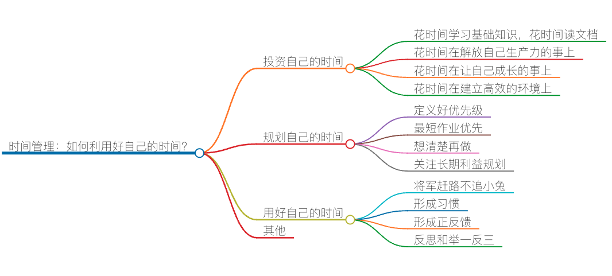

时间管理：如何利用好自己的时间？

前面我们讨论了如何争取到更多自己可以控制的时间，今天，我们接着再来聊另外一个话题——如何利用好自己的时间。对此，我有下面的这些心得和方法，如果你有更好的方法，也欢迎告诉我。
投资自己的时间
其实，时间就像金钱一样，你得学会投资时间，把时间投资在有价值有意义的地方，你就会有“更多的时间”。
花时间学习基础知识，花时间读文档。在参加工作的这 20 年时间里，我发现，很多程序员都把时间浪费在了查错上。究其根本原因就是基础知识不完整，没有好好地把技术相关的用户文档读完就仓促上手做事情了。其实只要把基础打扎实，认真读一下文档，你会省出很多很多的时间。系统地学习一门技术是非常关键的，所以这个时间是值得投资的。花时间在解放自己生产力的事上。在自动化、可配置、可重用、可扩展上要多花时间。对于软件开发来说，能自动化的事，就算多花点时间也要自动化，因为下次就不用花时间了。让自己的软件模块可以更灵活地配置和扩展，这样如果有需求变更或是有新需求的时候，可以不用改代码，或者就算要改代码也很容易。 这里，可能很多人会说不要过度设计，对于这个观点，我既同意，也反对。的确，过度设计不好，但是只要是能在未来节省时间的，宁可这个项目延期，我也会做的。花时间在解放自己的事上是最有意义的了。花时间在让自己成长的事上。注意，晋升并不代表成长，成长不应该只看在一个公司内，而是要看在行业内，在行业内的成长才是真正的成长。所以，把时间花在能让自己成长，能让自己有更强的竞争力，能让自己有更大的视野，能让自己有更多可能性的事情上。这样的时间投资才是有价值的。花时间在建立高效的环境上。我相信你和我会有一样的一个习惯，那就是“工欲善其事，必先利其器”。我们程序员在做事之前都喜欢把自己的工作环境整理到自己喜欢的状态下。比如使用趁手的开发工具，使用趁手的设备。- 这里，我想把这个事扩大一下，花些时间去影响你身边的人，比如你的同事，你的产品经理，你的老板，去影响他们，让他们理解你，让他们配合你来建立更好的流程和管理方法。在这个方向上花时间也是很值得的。
规划自己的时间
定义好优先级。无论你写不写出来，你一定都会有一个自己的 to-do list。有 to-do list 并不是什么高深的事。更重要的是，你要知道什么事是重要的，什么事是紧急的，什么事重要但不紧急，什么事又重要又紧急。这有利于你划分优先级。
最短作业优先。对于相同优先级的事，我个人喜欢的是“最短作业优先”的调度算法。理由是，先把可以快速做完的事做完，看到 to-do list 上划掉一个任务，看到任何的数据在减少，对于自己也好，对于老板也好。老板可以看到你的工作进度飞快，一方面有利于为后面复杂的工作争取更多的时间（老板只有在你有 Deliver 的时候才愿意给你更多的时间），另一方面，看到任务列表的减少会让你的心态更为积极。
而反过来，你花太多的时间在长作业上，长作业通常很容易出现“意外情况”让你花更多的时间，但此时你发现还有很多别的事没有做，这会让你产生焦虑感，产生更多的压力，进而导致更慢的生产效率。
想清楚再做。我发现很多时候，我们没有想清楚就开干了，边干边想，这样的工作方式其实很糟糕。你会发现，如果你没有想清楚，你总是要对已完成的工作进行返工，返工好几次，其实是非常浪费时间的。
所以，对于一些没想清楚的事，或是自己不太有信心的事，还是先看看有没有已有的成熟解决方案，或是找更牛的人来给你把把关，帮你出出主意，看看有没有更好、更简单的方式。
关注长期利益规划。要多关注长远可以节省多少时间，而不是当前会花费多少时间。长期成本会比短期成本大得多。所以，宁可在短期延期，也不要透支未来。这里的逻辑是，工作上的事你永远也做不完的，长痛不如短痛。
我一年要做 10 个项目，我宁可第 1 或第 2 个项目被老板骂，但是我可以赢得后面 8 个项目，从后面 8 个项目上把之前失去的找回来。而如果反过来的话，我虽然一开始得到了老板的信任，但是后面越来越玩不动，最终搬起一块大石头砸了自己的脚。而且，不关注长远利益的人，基本上来说也是很难有成长的。
也就是说，你要学会规划自己的行动计划，不是短期的，而是一个中长期的。我个人建议是按季度来规划，这个季度做什么，达到什么目标，一年往前走四步，而不是只考虑眼下。
用好自己的时间
将军赶路不追小兔。这个世界有太多的东西会让我们分心和跑偏。能专注地把时间投入到一个有价值的事上是非常重要的。确定自己的目标，专注达到这个目标，而不是分心。将军的目标是要攻城，而不是追兔子。所以，你要学会过滤掉与自己目标无关的事，不要让那些无关的事控制自己。
比如，不要让别人来影响自己的心情，心情被影响了，你一下就会什么都不想干了。做自己心情的主人，不要让别人 hack 了你的心情。再比如，知道哪些是自己可以控制的事，哪些是自己控制不了的事，在自己能控制的地方花时间。
再比如，知道哪些是更有效的路径，是花时间改变别人，还是花时间去寻找志同道合的人。不与不如自己的人争论，也不要尝试花时间去叫醒那些装睡的人，这些都是非常浪费时间的事。多花时间在有产出的事上，少花时间在说服别人的事上。
形成习惯。再好的方法，如果没有形成习惯，不能在实际的工作和生活中解决实际问题，都将成为空谈。如果你是个追求上进的人，我相信一定看过很多时间管理方法的文章和书籍，并且看的时候还会有些振奋，内心有时还会不自觉地想，“嗯，嗯！这个方法不错，正是我需要的，可以解决我的问题……”但很多时候都坚持不了几天就抛之脑后了。
所以，在讲述完如何争取时间，及如何使用时间之后，我想分享一下如何将这些时间管理方法形成习惯，因为我坚信：“做”比“做好”更重要。养成一个好习惯通常需要 30 天左右的时间，尤其在最初的几天就更为重要了。这时，不妨将文章中提到的方法和几个要点，写在某本书或者笔记本的扉页上，方便查看，时刻提醒自己。
而且，你可以结合自己的实际情况，适当作出调整。我的方法是我根据自己的情况总结的，不一定完全适合你，你完全可以基于我说的几个原则，发掘其他更适合自己的方法，这样才能更有利于形成习惯，对你更有帮助。
形成正反馈。在前面的文章中，我提到过，要有正反馈，也就是成就感，有助于完成一些看似难以完成的事儿。比如，我们说过，学习是逆人性的事儿，但如果在学习过程中不断地有正反馈，就更利于我们坚持下去。要让自己有正反馈，那就需要把时间花在有价值的地方，比如，解决自己和他人的痛点，这样你会收获别人的赞扬和鼓励。
反思和举一反三。可以尝试每周末花上点时间思考一下，本周做了哪些事儿？时间安排是否合理？还有哪些可以优化提高的地方？有点儿类似于我们常说的“复盘”。然后思考一下，下周的主要任务是什么？并根据优先级规划一下完成这些任务的顺序，也就是做一些下周的工作规划。
这样每周都能及时得到自己做时间管理之后的反馈，并有助于持续优化。通常坚持做时间管理一段时间以后，你都能在每次复盘时得到正反馈，这是有利于我们形成时间管理习惯的。但我这里也想强调一点，我们也要允许偶尔的“负反馈”，因为人的状态总是会有高潮和低谷的，控制好一个合理的度就可以了。
人最宝贵的财富就是时间，把时间用在刀刃上，必将让你的人生有更多收获。
其他
讲了这么多，还是让你来开心一下吧。下面这个图是我在某国内互联网公司工作的时候和我老板的聊天记录。是的，就只有这些信息，每次看到这个聊天记录时，我都会有一种莫名的喜感。结合这节课的主题，也给你开心开心。